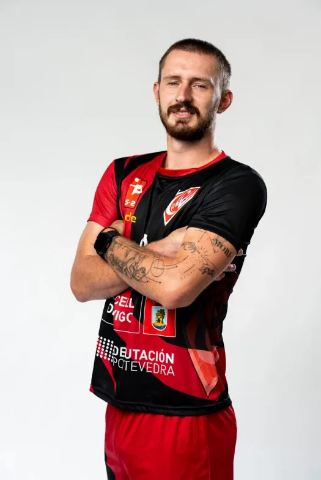

Jakub Kočvara · volejbalista // vývojář
Česká extraliga, rakouská Bundesliga a španělská Superliga 2 — pokaždé mezi nejlepšími bodujícími hráči.
Rychlé, responzivní stránky pro sportovce, kluby i firmy. Tahle stránka je důkaz.
Stejně jako na hřišti — žádné zkratky, jen opakovaná práce, dokud výsledek nesedí.
Beru každou stránku jako zápas — nastuduju soupeře (zadání), připravím taktiku a jdu na sto procent.
Tři země, tři ligy, šest sezón — naučily mě dotahovat věci do konce i pod tlakem deadlinu.
Moderní jednostránkový web jako tenhle — pro tebe, tvou firmu nebo projekt. Rychlý, responzivní, žádné šablony.
Profil hráče, trenéra nebo oddílu. Z první ruky vím, co sportovec potřebuje ukázat — výsledky, video, kontakt pro agenty a sponzory.
Máš web, který potřebuje oživit, zrychlit nebo jen pravidelně udržovat? Postarám se o něj.